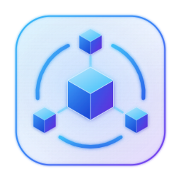

Opening the Microsoft Store…
K8Board for Windows 10 and 11 is installed and kept up to date by the Microsoft Store.
Open K8Board in the Microsoft StoreBack to k8dashboard.in

K8Board for Windows 10 and 11 is installed and kept up to date by the Microsoft Store.
Open K8Board in the Microsoft Store